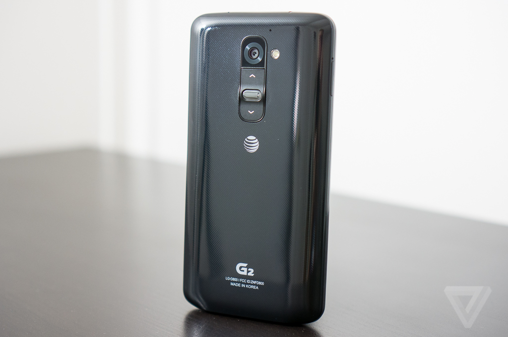
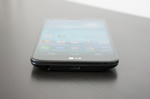
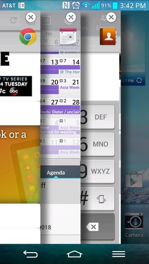
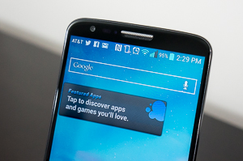
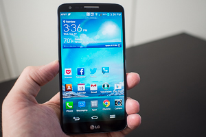
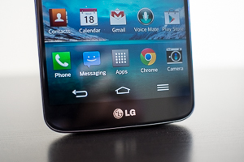
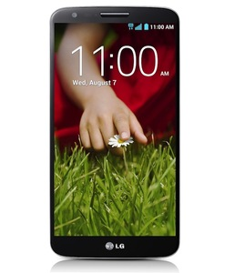

IPhone 5S review
IPhone 5S review
| Home | History Of smartphones | Reviews | Best cameraphones | Best android smartphones of 2013 |
LG G2 Review
The undisputed new champion of the spec sheets.

LG used to be cool. The Chocolate, En-V, and other phones were household names back when messaging phones and QWERTY keyboards ruled the world, and LG’s hit devices spawned multiple generations of imitators. But LG has struggled to replicate that success with its smartphones, despite quietly releasing solid devices year after year.
While the public’s attention has been captured by Apple and Samsung, LG has started to feel like a second-rate Samsung, a day late and a dollar short. The company is looking to change that with this year’s G2: a $199 smartphone that’s the most powerful mobile phone LG has ever made. It’s also managed to get the phone on every major carrier in the US — something that wasn’t possible for most manufacturers until this year, and is considered crucial to making a smartphone a success these days.
The G2 is quite clearly LG’s answer to Samsung’s Galaxy S4. For every volley that Samsung has lobbed, LG has come up with a retort in the G2. It’s coming nearly six months later than the GS4, though, and after other phones like the Motorola Moto X have grabbed much of the spotlight. Then there’s that whole nagging rumor that the G2 is essentially what the next Nexus smartphone from Google will be.
Is the G2 enough for LG to avoid being “the other Samsung?” Or will it just be overshadowed by Google’s Nexus version, much in the way last year’s Optimus G was? I’ve spent the past few days with LG’s best to find out.
The G2 Checks Every Spec You Could Ask For

Like the Galaxy S4, the LG G2 is a checklist phone. Big, beautiful, high-resolution display? Check. Insanely fast processor? Check. Massive battery? Check. IR blaster? Check. Customizable software? Check. If there is a spec or feature that people might care about, LG has made sure to include it in the G2. Most are clearly designed to match or one-up what Samsung offers in the Galaxy S4: the screen is bigger, the processor is faster, the camera is more specced-out, and the battery is larger.
First and foremost is the display, and LG really nailed it on the G2. The 5.2-inch, 1080p IPS screen is bright, sharp, color-accurate, and pretty much everything you want in a smartphone screen. Unlike what we see on most phones, the auto-brightness function actually out
works as it’s supposed to, so when I was up late catching up on my Pocket queue, I didn’t have a ridiculously bright screen burning my eyeballs (and irritating my wife). The G2 is a reader’s dream: the screen’s high resolution, appropriate brightness, and accurate colors really make you forget that it’s not a printed piece of paper you’re looking at. There isn’t much more you could ask for. Further, the G2’s panel tops the HTC One’s display, the prior champ of best screens, and is pretty much the best smartphone screen I’ve ever seen. That’s saying something.
With a screen that big, you’d expect the G2 to be absurdly massive. Don’t get me wrong, at 2.79 inches across and 5.45 inches tall, the G2 is without a doubt a big phone. But it’s not much bigger overall than the One or the Galaxy S4, despite having a noticeably larger screen. This is due to the incredibly small border around the display — there’s almost nothing there but screen.
Furthermore, LG has ditched the hardware keys for software navigation buttons. The net effect is that it feels like you are just holding a screen and nothing else, which is undeniably cool. Unfortunately, despite LG’s best efforts at minimizing the phone’s size around the screen, I still found it pretty hard to handle in one hand. You can’t shrink a 5.2-inch screen but so much.
By far the strangest thing about the G2 is that the volume buttons and power key are on the back of the phone, just below the camera lens. In theory, this makes sense: the keys are right where you rest your fingers when you hold the device, and it lets LG keep the sides of the phone nice and clean. It also avoids the trap that the HTC One falls into of putting the button on the device, far out of reach. But I could never get used to the back-mounted buttons. I was always second guessing myself: am I hitting the volume up button or am I about to turn off the screen in the middle of this Miley Cyrus video? Or worse, am I just getting gross finger grease all over the camera lens? Why can’t I just use my thumb to change volume like with every other phone ever? I would constantly flip the phone over before adjusting the volume, which defeats the entire purpose of putting buttons where my fingers naturally land.
The Back Mounted Buttons
Never Felt Right

Ironically, LG seems to be aware of this, since it makes the problem with the power button almost a non-issue with its "Knock On" feature. LG has cribbed the double-tap to wake feature pioneered by Nokia, making it much easier to turn on the screen. Two taps on the display and the G2 springs to life, two more and it goes right back to sleep. It’s such an intuitive and smart feature, I really wish every smartphone maker would adopt it. Hopefully others can do a slightly better job than LG, though, as it frequently takes more than just two quick taps to get the G2 to respond.
Aside from the issue with the power buttons, the rest of the G2’s design is pretty straightforward and uninspiring. It’s a plain black slab with a silver trim and it’s all glossy plastic as far as the eye can see. Unlike last year’s Optimus G, which featured a patterned glass back, the G2 has a slimy-feeling plastic finish that hoards fingerprints. There is a subtle texture to the plastic that you can see if you look closely, and if you run your fingernail along it you can feel the ridges. Unfortunately, it does nothing to improve the handling or the grip of the phone — in fact, the G2 is quite slippery — and despite the fact that the G2 is well-built, it just doesn’t feel as nice as other phones like the Moto X or HTC One.
Feature creep

While LG was busy cramming every hardware spec it could into the G2, it was also developing some of the heaviest and most overwrought software I’ve ever seen. Like Samsung, LG has taken the kitchen sink approach to smartphone software, filling it to the brim with every feature imaginable. At the same time, LG’s excessive feature creep makes actually using the device far more complex than it needs to be.
While the Moto X and even the iPhone with iOS 7 have taken a minimalist approach to software design, LG’s interface on top of Android 4.2 is full of gradients, textures, buttons, and skeuomorphism. The interface is accompanied by a cacophony of bleeps, bloops, clicks, clacks, and superfluous animations for every action.
The default alert tone is even a rendition of LG’s corporate slogan sung by the Vienna Boys Choir — I’m not sure there’s a single person in the world that wants to hear "Life is Good" sung by prepubescent boys every time they get a new text message.
LG Copied Samsung's Kitchen Sink
Approach To Software

Branded features with names like QSlide, Quick Memo, Quick Remote, Voice Mate, and Slide Aside are everywhere you turn. LG has even appropriated Samsung’s gimmicky eye-tracking feature for keeping the display on and pausing video when you look away. QSlide, which lets you use select apps in pop-up windows while you use another app, ostensibly improving multitasking, never felt like more than a parlor trick to me.
Another multitasking enhancement, Slide Aside, expects you to use a three-finger swipe to the left to "dock" an app for later use, essentially keeping it running in the background. I never really mastered the gesture required to use Slide Aside, and every time I tried to use it, I invariably activated another swipe gesture in whatever app I was trying to dock (I had a lot of unintentionally archived emails while using the G2).
Voice Mate is LG’s answer to Siri and S Voice, and it can more or less do the same things as those services. But since the G2 is running Android 4.2, it also has Google Now and Google’s own excellent voice actions, which are already great, making Voice Mate more or less a waste of time.
Quick Remote is LG’s app for the built-in IR blaster and it lets you control your TV and entertainment console. The setup is pretty easy — I was flicking channels on my Panasonic TV in no time — but the app lacks any guiding features for discovering stuff to watch, something that both HTC and Samsung have included in their proprietary remote apps.
Power to spare

Continuing its role as spec-sheet master, the G2 is one of the first smartphones on the market to use Qualcomm’s high-end Snapdragon 800 quad-core processor. The 800 is one of the fastest chips ever produced for mobile devices, and with it, the G2 absolutely screams. Despite LG’s apparent attempts to slow the phone down with a heavy interface and gobs of animations, the G2 never misses a beat. Scrolling is surprisingly fast and smooth for an Android device, and every action is met with an instant response. I really didn’t encounter any performance issues with the G2 the entire time I used it, which is a breath of fresh air. It also sounds great in calls and maintains speedy connections on LTE and Wi-Fi.
But as the Moto X has proven, marginal improvements in performance don’t necessarily translate into a great smartphone experience. The G2 is great if you must have the fastest, no-holds-barred Android phone ever, but unless you compare it side-by-side with another phone, those speed increases are hard to notice and don’t really change how you use your phone every day. We’re at the point where year-old or even mid-range hardware is more than enough to provide a great experience, and the G2’s blazing speed doesn’t really make that much of a difference in the real world.

There’s still a lot of room for improvement in how long our phones last between charges, and the G2 does make a noticeable difference there. It has a massive 3,000mAh battery, which kept the G2 going for much longer than lesser phones, such as the HTC One or Moto X. Even phones that exist solely to have long battery life (I’m looking at you, Droid Maxx) can’t keep up with the G2. In our battery rundown test, the G2 hit 8 hours and 52 minutes, the highest we’ve seen all year, bested only by last year’s Droid RAZR Maxx HD. In real-world use, the G2 was easily able to last me from early morning well into the night, even with lots of streaming music and reading during long commutes on the train. Less demanding users should be able to get two days of use between charges. If you’re going to carry around an oversized smartphone, you might as well get oversized battery life from it, and the G2 completely delivers on that front.
A camera worth using
The G2’s spec sheet bravado marches on with its 13-megapixel camera with optical image stabilization. It has a scratch-resistant sapphire crystal glass lens and can shoot 1080p video at 60 frames per second. It also has 9-point autofocus and rapid capture — it’s one of the fastest smartphone cameras I’ve ever used.
LG practically stole Samsung’s camera interface and shooting modes and slapped them on the G2, including the silly dual-camera feature and the ability to remove unwanted photobombers. That’s not really a bad thing — the camera app is one of the better ones in the Android world, and it gives you quick access to a variety of shooting parameters, provided you stick to one of the standard camera modes.
LG advertises the G2’s low-light capabilities thanks to its stabilized lens, but as we have seen with the HTC One and Nokia Lumia 920, optical stabilization only helps keep the camera still — it does nothing for you if your subject isn’t stationary. The G2 takes great pictures outdoors and in good lighting, and it can hold its own indoors. But what I really want is a smartphone that can keep up with my speedy toddler, and we’re not quite there yet. Despite all of its spec sheet braggadocio, the G2’s camera is merely good, not mind-blowingly great. It is, however, leaps and bounds ahead of the Nexus 4’s camera, so perhaps we’ll finally have a Nexus device that can take a decent picture.
Wrap-up

8.0 VERGE SCORE
GOOD STUFF BAD STUFF
- Beautiful display Overwrought software
- Blistering performance Awkward rear buttons
- Great battery life Slimy plastic feel
THE G2 IMPROVES UPON MUCH OF THE GALAXY S4 WITHOUT SOLVING ITS PROBLEMS
At the end of the day, where do all of these specs put the G2? The G2 is a powerhouse on multiple levels: it’s incredibly fast, has a beautiful display, and it’s got the stamina to go all day. But when it comes down to the raw emotion and pleasure of using a device, the G2 doesn’t hit the marks set by the Moto X or HTC One. LG’s overdone and obnoxious software quickly grows tiresome, and the sheer size of the phone presents a number of usability issues. Not to mention that it just doesn’t feel good when you’re holding it thanks to the glossy finish. Compared to the Galaxy S4, the G2’s apparent target, I’d take the G2 any day of the week, but that doesn’t make it the best. Samsung’s ubiquitous marketing machine, which LG has yet to really duplicate, will also ensure that more people come looking for Galaxy phones than they do for LG devices.
LG’s decisions to hedge its design almost makes it feel as if it isn’t fully convinced that everything on the G2 is great. The company clearly thought putting the power and volume buttons on the back of the phone was a good idea, but it thankfully neutered their necessity with the Knock On feature. The absurd level of customizability of the software plays to Android’s strengths and caters to aficionados, but the hardcore Android users aren’t going to want to deal with LG’s interface at all, and the average user will never bother to change things from how it looks on day one.
Fortunately, the G2 is widely expected to be the basis for Google’s next Nexus smartphone, much in the way last year’s Optimus G laid the foundation for the Nexus 4. If that is indeed the case, it’s a great thing for potential Nexus buyers, because the G2’s display, battery, and camera all address complaints we’ve had with prior Nexus devices. Strip away LG’s software and move the buttons back to where they belong and you have the potential for a really great phone. A Nexus device with a great screen, awesome battery, and good camera? Sign me up.
But for all of the G2’s unapologetic excesses today, from its high-end hardware to its overdone software, from its beautiful screen to its glossy plastic body, it just isn’t enough to make it land on my short list of phones to recommend. If all you care about are specs, the G2 has them in spades, but it doesn’t have the best user experience. See you next year, LG.